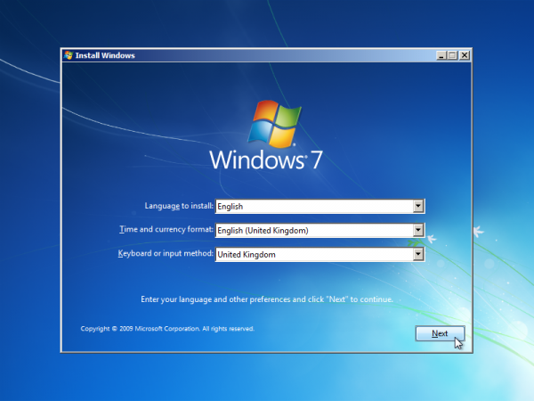

ARTICOLE RECENTE
|  |  |
|---|---|
| Cum instalezi un sistem de operare -1- | USB 3.1 |
| In articolele ce urmeaza va voi explica cum se instaleaza un sistem de operare pe un computer... | In acest articol vreau sa discutam despre noile tehnologii de pe piata. Voi incerca sa aduc in discutie noul port USB despre care se tot vorbeste in perioada aceasta. Este vorba, evident, despre USB Type C. |